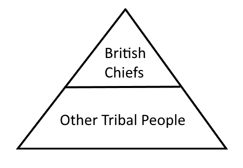
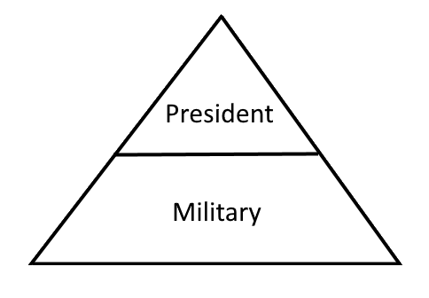

3/19 Notes Nigeria
Classroom Warm-ups
State & Regime Pyramids
Colonial
The British put chiefs at the top of the heirarchy. They ruled with an Authoritarian regime and had Britain’s economic interests in mind. The state was a British colony.

Post colonial
After the Colonial Era, Nigeria kept the British parliamentary system. In 1966, the military took control and established military rule. In 1979, due to ethnic tensions and divisions, they switched to a presidential system. The military is still very active in policy though.

National question
The national question is the question of who rules Nigeria and how do they rule it? Nigeria has gone through a lot of regime changes and has not found a regime that worked for a long time.
Imperialism’s effect on government legitimacy
Imperialism has caused the legitimacy of the government to become charismatic. While the British authoritarian chiefs were ruling, the people became used to just doing what the government told them to do. After the British leave, they create ethnic conflicts among factions. The British set up an authoritarian regime so they could exploit Nigeria for economic benefits.
3 Major Ethnic identities
- Igbo — Established the first military regime in 1966. The Igbo also fought for the independence of Biafra, their home land. The Igbo formed a coalition with the Hausa-Fulani, which caused the Yoruba to become uneasy. They live in the southeast and are mainly Catholic, with a growing number of protestants. Relatively industrialized
- Yoruba — A very large ethnic group that is a mix of Christians and Muslims. They live in the Southwest.
- Hausa-Fulani — A maily Muslim group that lives in the Northwest. They are largely ergrarian. They rely on agriculture and trade.
Biafra
Biafra is the home land of the Igbo. They fought for its independence in the Biafran Civil War. They lost and the country was held together by miliary rule. The regime was replaced by a presidential system in 1979. They don’t really coincide with the democracy.
Classwork
How to Rule Nigeria Plan
- Andrew’s Group — Split Nigeria into two states, and let the people decide where to go
- Kylie’s Group — Offer the Hausa more autonomy and financial aide
- Zach’s Group — Semi-presidential system with federalist regime. The prime minister is always Hausa and the president is Igbo
- Lexy’s Group — Different heirarchies with intermidiate groups